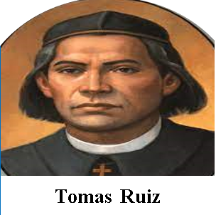
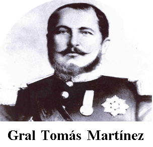
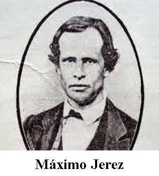
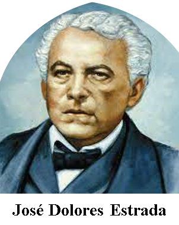
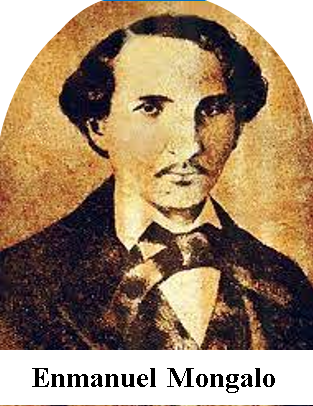
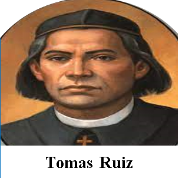
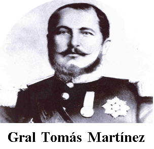
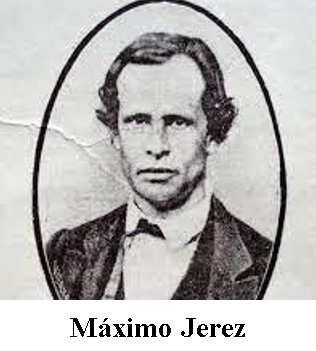
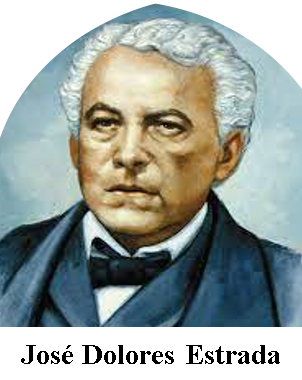
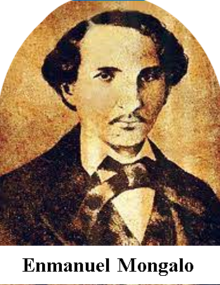

INDEPENDENCIA DE NICARAGUA
Corría el mes de Septiembre del año 1821. Los habitantes de la provincia española de Nicaragua, al igual que aquellos de las otras de la región, consideraron que ya era tiempo de una Independencia radical. Las cruentas guerras independentistas en otras regiones del continente y otros factores los llevaron a alcanzar ese sueño: su nacimiento como una nueva y pequeña nación, libre y soberana.
Varios fueron los factores que llevaron a las colonias a decidir su separación de España: el ejemplo emancipador de las colonias británicas en el norte, la ilustración francesa que traía consigo nuevos ideales, el fuerte control y carga de impuestos por la corona española y el debilitamiento progresivo de la misma.
El 15 de septiembre de 1821 fue la fecha que marcó un importante acontecimiento en la historia de Centroamérica: la firma del Acta de Independencia de Guatemala, El Salvador, Honduras, Nicaragua y Costa Rica.
PRÓCERES DE NICARAGUA
El 15 de Septiembre estaba sentado en la Asamblea, la de los Próceres, que nos darían la emancipación. Cuando uno de los más ilustres próceres, José Cecilio del Valle, parecía conquistar los ánimos para retardar la proclamación de la Independencia, Larreynaga y otros ilustres próceres, en discursos encendidos de pasión y de razones, inclinaron la balanza de la libertad inmediata, en medio de los aplausos del pueblo que llenaba las galerías.
La dependencia de Centroamérica se inicio en Diciembre de 1813, en el Convento de Belén, ciudad Antigua, Guatemala, dirigiendo la famosa conspiración conocida como la "Conjura de Belén". Como consecuencia del involucramiento del padre Ruiz en la conjura, fue capturado la noche del 1° de Diciembre, exactamente un día antes de que se llevara a cabo el plan revolucionario que fracaso por la traición de Pudenciano de la llana.
Guerrero (Nagarote, 21 de diciembre de 1820 - León, 12 de marzo de 1873) fue un militar y político nicaragüense, que ocupó la Presidencia de La República entre el 15 de noviembre de 1857 y el 1 de marzo de 1867 como el primer presidente del llamado período de "Los Treinta Años Conservadores".
Fue un abogado, político y militar nicaragüense. Se le considera el principal pensador liberal de la historia de Nicaragua. También fue un ferviente adalid del unionismo centroamericano.
Tuvo participación en varios combates que se libraron en pro de nuestra independencia en la ciudad de Granada. En 1827, figura en la primera guerra detestable y fratricida de Cerda y Arguello, con el grado de Sargento de las tropas argüellistas.
Fue un maestro nicaragüense recordado por su gesta heroica en la primera batalla de Rivas el 29 de junio de 1855 contra los democráticos de Castellón y los filibusteros de William Walker durante la Guerra Civil (1854-18 de julio de 1856) que enfrentó a los bandos legitimista y democrático, antes de la llamada Guerra Nacional de Nicaragua (18 de julio de 1856-1857).
 








